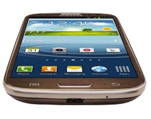

Android is an operating system based on the Linux kernel, and designed primarily for touchscreen mobile devices such as smartphones and tablet computers. Initially developed by Android, Inc., which Google backed financially and later bought in 2005, Android was unveiled in 2007 along with the founding of the Open Handset Alliance: a consortium of hardware, software, and telecommunication companies devoted to advancing open standards for mobile devices. The first publicly available smartphone running Android, the HTC Dream, was released on October 22, 2008.
Google acquired Android Inc. on August 17, 2005; key employees of Android Inc., including Rubin, Miner and White, stayed at the company after the acquisition. Not much was known about Android Inc. at the time, but many assumed that Google was planning to enter the mobile phone market with this move. At Google, the team led by Rubin developed a mobile device platform powered by the Linux kernel. Google marketed the platform to handset makers and carriers on the promise of providing a flexible, upgradable system. Google had lined up a series of hardware component and software partners and signaled to carriers that it was open to various degrees of cooperation on their part.
A new report from Kantar Worldpanel ComTech says that Android devices as a group outsold the iPhone in the U.S. during the three months ending January 2013, with their share of total sales rising to nearly 50%. The report, based on the results of Kantar's ongoing consumer panel research, saw U.S. Android sales rise a little more than 6% compared to the same period one year ago, while iOS lost just less than 5%, finishing at about 46%. Sprint customers were particularly likely to buy Android devices during the studied time frame, according to the study - to the tune of 72% of all smartphone sales.
Android has an active community of developers and enthusiasts who use the Android Open Source Project source code to develop and distribute their own modified versions of the operating system. These community-developed releases often bring new features and updates to devices faster than through the official manufacturer/carrier channels, albeit without as extensive testing or quality assurance; provide continued support for older devices that no longer receive official updates; or bring Android to devices that were officially released running other operating systems, such as the HP TouchPad. Community releases often come pre-rooted and contain modifications unsuitable for non-technical users, such as the ability to overclock or over/undervolt the device's processor. CyanogenMod is the most widely used community firmware, and acts as a foundation for numerous others.